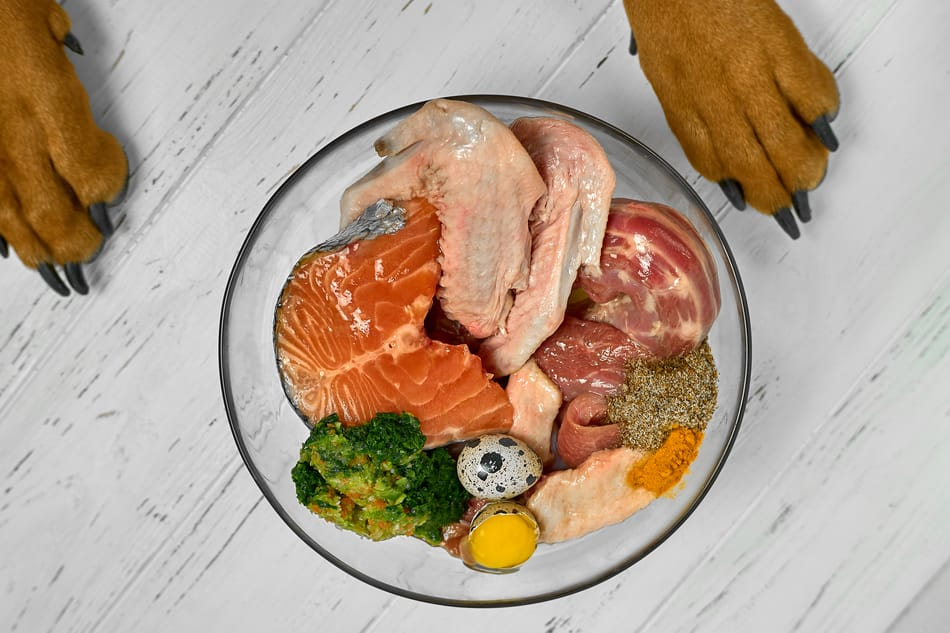
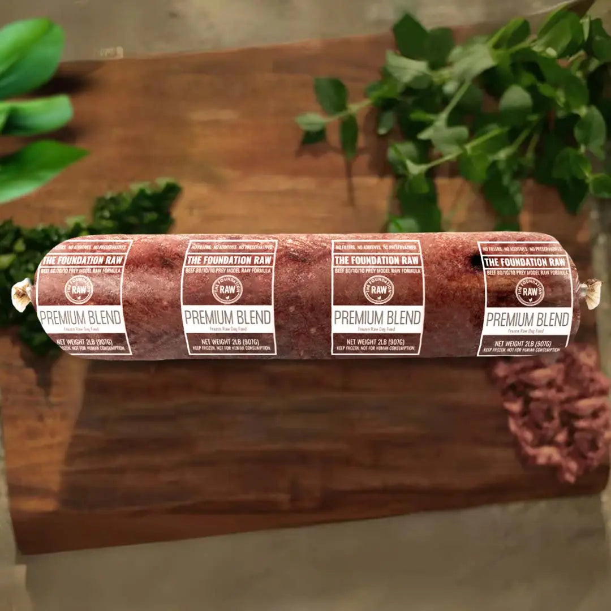

La salute del Dobermann inizia dal piatto: scopri perché abbiamo scelto un'alimentazione 100% naturale per i nostri cani
Il Dobermann è un cane atletico, muscoloso e longevo: la sua struttura fisica richiede un'alimentazione di qualità superiore, che rispetti la sua fisiologia di carnivoro e supporti articolazioni, muscolatura e sistema immunitario nel tempo.
Nel nostro allevamento non utilizziamo crocchette industriali né per gli adulti né per i cuccioli. Dopo anni di esperienza sul campo abbiamo scelto un'alimentazione naturale basata su carne fresca di alta qualità, pressatura a freddo ed equilibrio minerale — perché i risultati parlano da soli.

Numerosi studi dimostrano come un'alimentazione industriale a lungo termine possa compromettere la salute del cane, in particolare in razze atletiche come il Dobermann.

Per i nostri Dobermann adulti e per i cuccioli utilizziamo un alimento umido pastorizzato a basse temperature con altissima percentuale di carne (70–85%), zero conservanti chimici e un esclusivo equilibrio minerale garantito da alghe micronizzate.
Questo tipo di alimento è paragonabile per qualità a una dieta crudista, ma con la praticità di un prodotto pronto all'uso. È l'unico prodotto al mondo con equilibrio minerale completo, senza additivi, senza OGM, senza steroidi anabolizzanti né ormoni di sintesi.
Collaboriamo con Reico Vital-Systeme, azienda tedesca leader in Europa nell'alimentazione naturale per cani e gatti, il cui approccio si basa sul rispetto della fisiologia della specie e sulla qualità delle materie prime.
Dopo anni di osservazione diretta sui nostri Dobermann, i miglioramenti sono evidenti e documentabili. Questi sono i risultati che vediamo ogni giorno.
Il Dobermann è un cane da lavoro ad alta energia. Ha bisogno di proteine nobili di origine animale per sostenere l'attività fisica, l'addestramento e le competizioni sportive.
La conformazione atletica del Dobermann richiede un corretto apporto di calcio, fosforo e minerali in equilibrio per prevenire displasie e problemi articolari, specialmente durante la crescita.
Il Dobermann è predisposto a cardiomiopatie. Un'alimentazione ricca di taurina, L-carnitina e acidi grassi omega-3 supporta la funzione cardiaca e riduce i fattori di rischio infiammatori.
Un intestino sano è la base di tutto. L'equilibrio minerale garantito dalle alghe micronizzate rafforza il microbiota, migliora l'assorbimento dei nutrienti e potenzia le difese immunitarie.
I cuccioli di Dobermann crescono velocemente. Un'alimentazione naturale garantisce una crescita più lenta e fisiologica, riducendo il rischio di problemi scheletrici tipici delle razze grandi.
I nostri Dobermann alimentati naturalmente mostrano un invecchiamento più sereno, con meno patologie croniche, più vitalità e una qualità della vita superiore negli anni.
Non esiste un'unica strada: ogni cane e ogni famiglia è diversa. Ecco le due opzioni che consigliamo, entrambe valide e supportate dalla nostra esperienza.
Per chi ha poco tempo ma vuole il meglio per il proprio cane. Alimento umido pastorizzato a basse temperature con 70–85% di carne, zero additivi e equilibrio minerale completo. Pratico, bilanciato, sicuro.
Ideale per: famiglie con poco tempo, cuccioli appena adottati, transizione dalle crocchette, cani anziani o con problemi digestivi.
Per chi vuole portare l'alimentazione del proprio Dobermann al massimo livello. Una dieta BARF personalizzata, costruita con il supporto di un nutrizionista specializzato, calibrata sulle esigenze specifiche del singolo soggetto.
Ideale per: cani sportivi, soggetti da esposizione, cani con patologie specifiche, proprietari motivati e con tempo da dedicare alla preparazione.
Siamo partner Reico Vital-Systeme, azienda tedesca leader in Europa nell'alimentazione naturale per cani e gatti. Visita il nostro sito dedicato o contattaci direttamente per una consulenza nutrizionale personalizzata, gratuita e senza impegno.
Partnership
Siamo partner Reico Vital-Systeme, azienda tedesca specializzata in alimentazione naturale ed equilibrata per cani e gatti. Attraverso il nostro sito dedicato puoi scoprire prodotti, filosofia e consulenza nutrizionale per garantire al tuo cane tutto ciò di cui ha bisogno.
Scopri Reico